1. Principles and practices
This week I worked on defining my final project idea and started to getting used to the documentation process.
Project Idea Pitchig
This week I worked on final project ideas for Fab Academy.
For the final project, I pitched some ideas. and finally, a dynamic sculpture was finalized with a 15x15 matrix circular disc flap display. That operates based on an electrically energized magnet controlling a flip disc with one side covered in black and the other in any color. This will make use of the majority of the fab lab's equipment, allowing me to have more hands-on experience with each machine.
For further information, click here
Intro To GitLab
We began our days with Fab Acadamy with learning the fundamentals of Gitlab. Having already worked with Github during my under graduation, this was a little easier for me. We were working with Markdown, a lightweight markup language that simplifies the creation of web pages by substituting complex syntax with understandable formatted text. Which was utilised to create our first fab website for documenting and assessing our progress.
How to open a gitlab repository
- Login to your GitLab account,
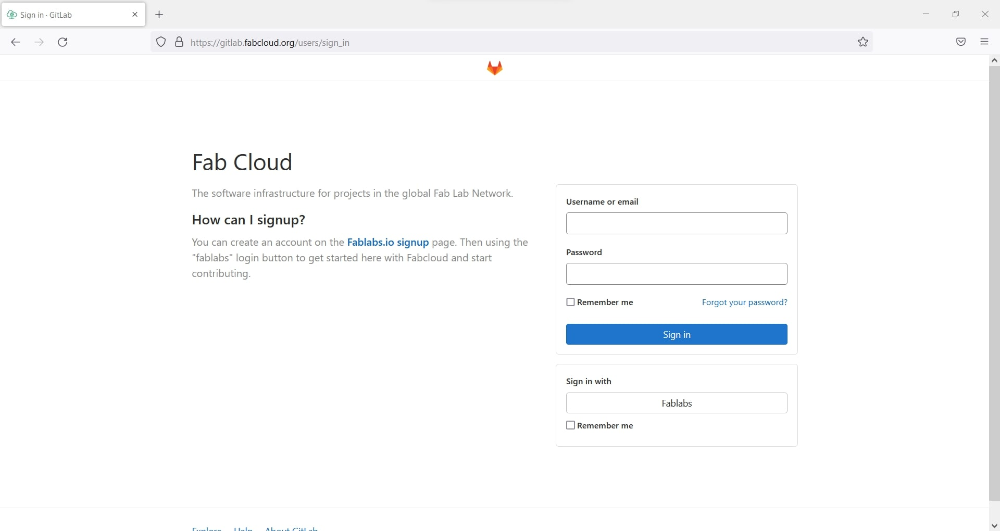
For redirecting to login page click here
- Select the Project "Academany / Fab Academy / 2022 / Fab Academy 2022 Labs / Your FabLab Location / Your FabLab Location students / Your Name", from Your projects in Projects on Fab Cloud.
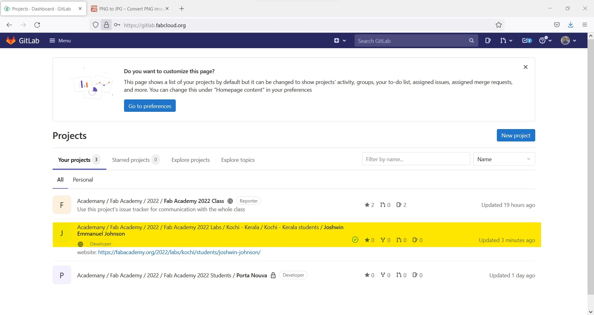
How to edit a file online
- For example we can take mkdocs.yml.
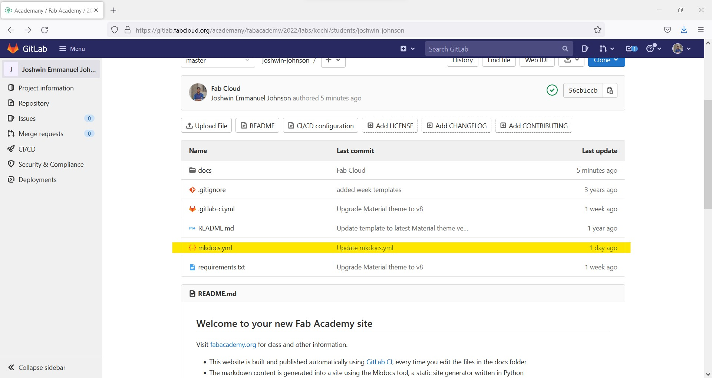
- open the file mkdocs.yml and click on Web IDE for editing the file you can also use Edit.
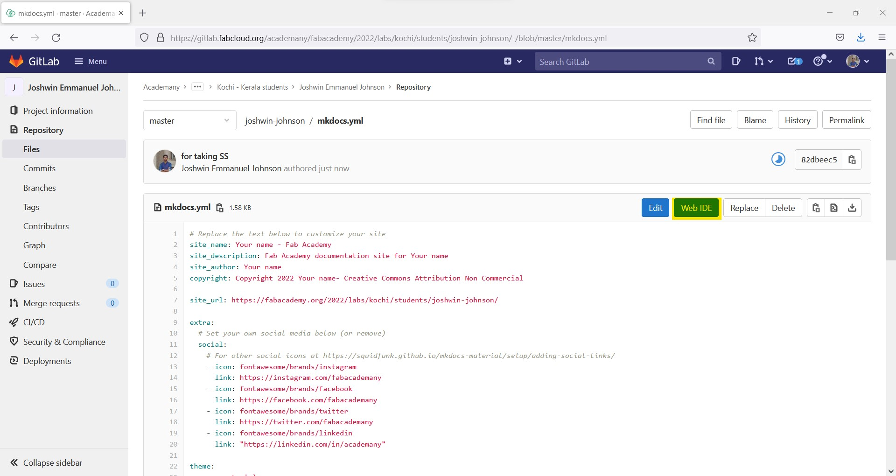
- Edit and create your own documents say the blue is what you want to edit, the one highlighted in green is waht you edited , and you can see number of changes you made in the editer is in Red. After editing Click Commit...
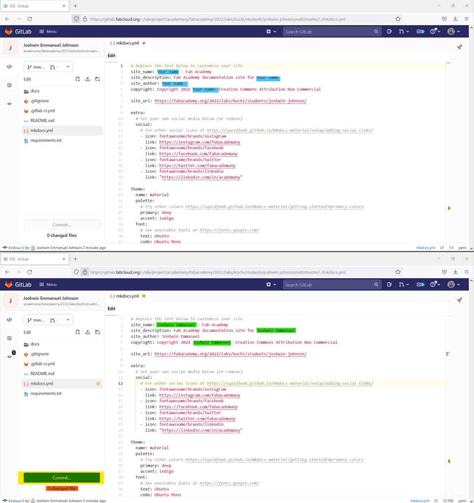
You can also see preview of the edited code by clicking on Preview Markdown
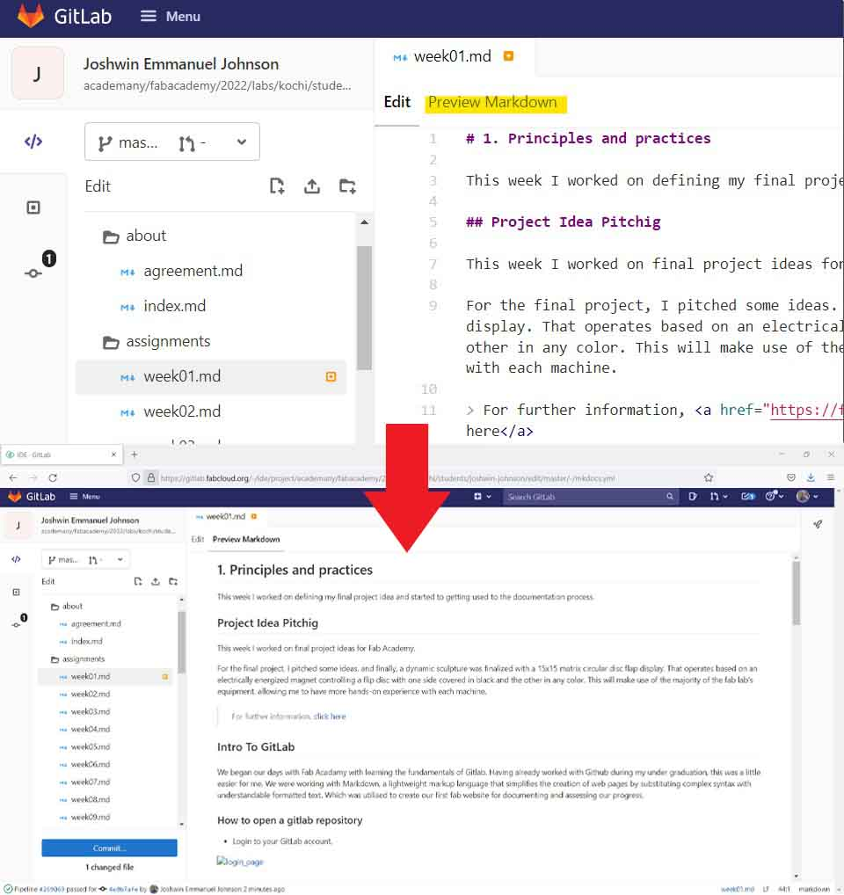
Commiting the edits
- After clicking Commit... the next window will allow as to review our edits where the edited parts are shown in red background and the one in green background shows the changes made. We can eithe commit or discard as our choice.
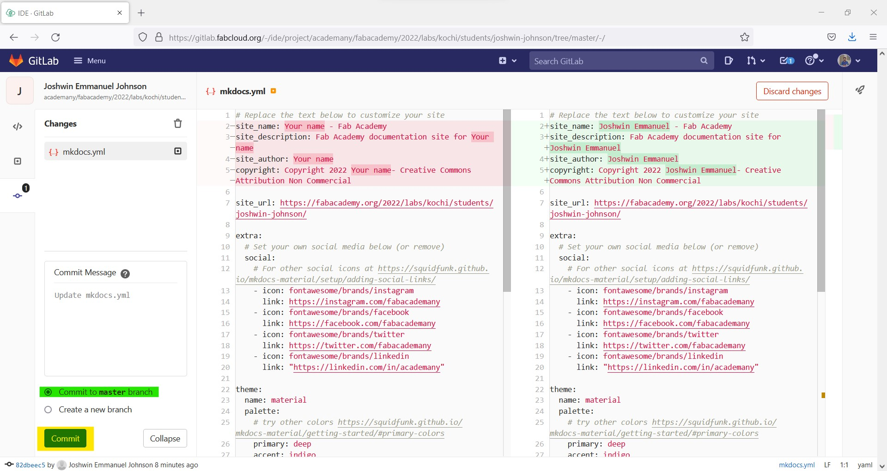
Make sure commit to master branch is alwase checked.
- If all the changes are sucessfully commited we can see a message like the one in the Red Box
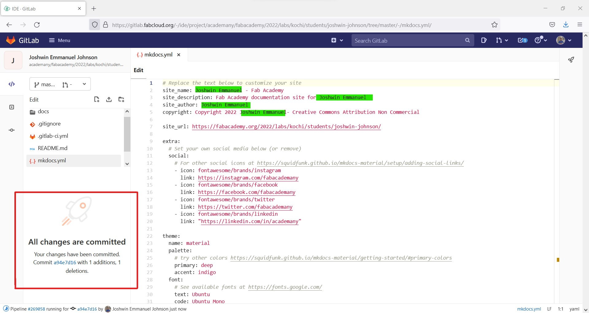
Changes made are marked in green for convenience
- we can view the site in whole on fabacademy.org/2022/labs/Your_Fab_Location/students/Your_Name/
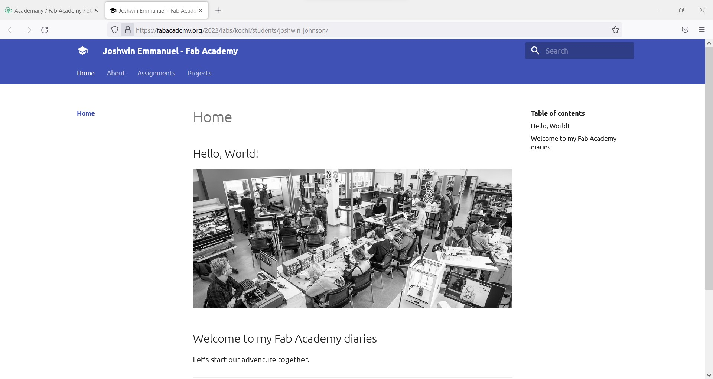
Setting up Local Repository
Local repositories can be used for ease of usage and to avoid accidentally committing incorrect code. So let's look at how to install and utilise git local repository to pull files from a remote repository to a local repository created on our personal computer.
How file transfer is done between local and remot repositoies

Installing git
Go to git for windows official vebsite and click download

To redirect to download page, click here
Now open the file and click RUN
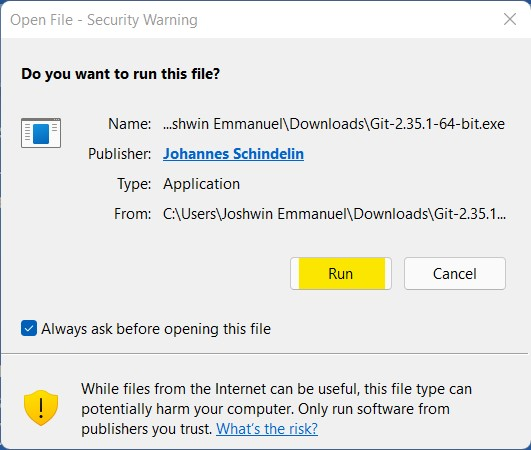
now follow the steps and complete the installation process
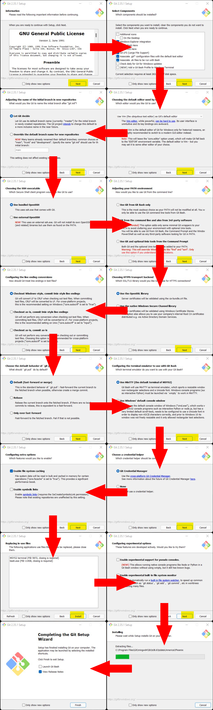
Setting up Git and SSH Key
The steps below are only used ones, to set up your Secure Shell Protocol (SSH), which allows you to securely transfer files over an unsafe network using a cryptographic network.
After installing git clone your current repositery from the remot server to your system
Open the desiered file location and right click and click git bash here
- Now in the terminal type in
git clone https://gitlab.fabcloud.org/academany/fabacademy/2022/labs/kochi/stuadents/username.gitclone your current repositery from the remot server to your system
git conig --global user.name "username"for setting git username
git conig --global user.email "email"for configuring your mail tor file transfer
cat ~/.ssh/id_rsa.pubfor checking if we have a SSH Key
ssh-kegen -t rsa -C "$email"for generating your SSH Key
cat ~/.ssh/id_rsa.pubfor viewing the SSH Key
clip < ~/.ssh/id_rsa.pubCopy cmd in git terminal for windows
paste the copied KEY to your SSH Key Section in user settings
For redirecting to SSH Key Section click here

Updating edits to remote repo
To ensure optimal workflow, updates committed in the local repo must be pushed to the remote repo regularly. Follow the steps to learn how to fetch data from a remote repo and push data from a local repo to a remote repo.
git pull
for ensuring the local repo is the updated version by featching the data from remot repo
git add .
after edit updating the file wich is to be uploaded
git commit -m 'commend about the change'
commiting changes with commend
git push
for pushinng the changed files to the remote repo

Creating a parallel website for learning html, CSS and Java Script
Installed visual studio code for creating/coding the website, downloaded various intriguing templates for reference, and copied their code to make the coding process faster. untill now completed the landing page for the website.
Designing UI/UX
I sketched a little landing page design and searched the internet for a matching template but couldn't find one, so I started coding and adding intriguing elements to the site from cool themes I found on the internet.

Coding
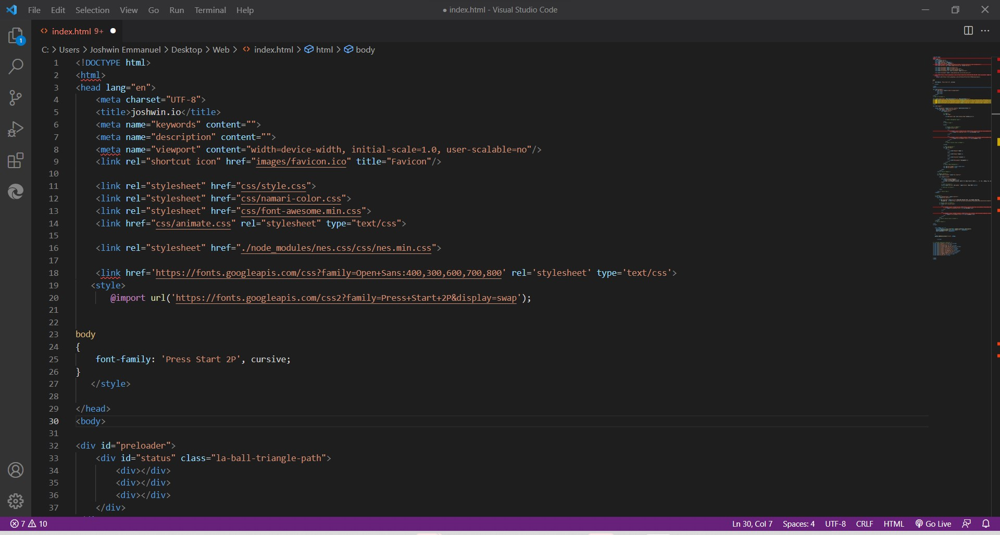
Creating Artwork
created some art work by editing photos from internet using Photoshop
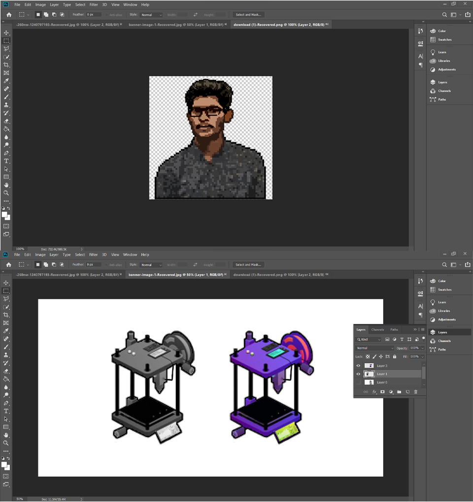
Glimps from the website

Following are the referred templates and sites for creation.
- currently this website is hosted via github click here
Initial idea and sketching of the project
My plan is to create a dynamic sculpture with a 15x15 matrix disc flap display. One side of the rotating/flipping disc is painted black, while the other side is painted white or any other color. When the permanent magnet on the disc is attracted by the excited electromagnet which is installed in the disc holder, the colored side of the disc flips up. Each holder represents one of the matrix's elements. As part of the beginning phase of my final project, I created a hand sketch.
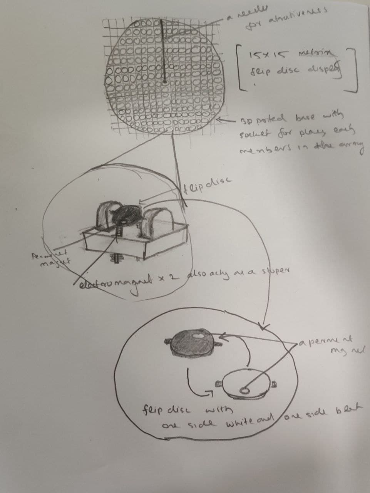